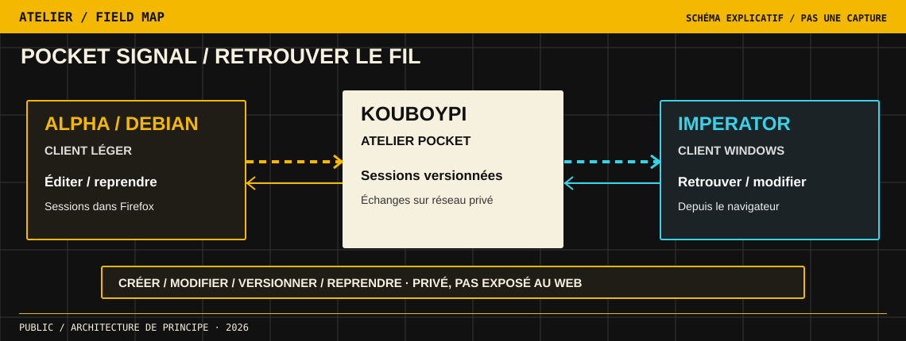

Héberger un petit service
Installer Atelier Pocket comme service sur le Raspberry Pi, accessible aux appareils autorisés par le réseau privé.
Un petit établi de poche pour garder ses notes de session et retrouver son travail d’une machine à l’autre, sans installer une usine à gaz.

Reprendre un travail entre un PC principal, une tablette Linux légère et un petit serveur peut coûter plus d’attention que le travail lui-même. Les discussions, notes et prochains gestes se dispersent. Pocket Signal part d’un besoin simple : ne pas perdre le fil en changeant d’appareil.
Construire une interface très légère, utilisable sur des machines modestes, avec des sessions synchronisées et un accès rapide aux outils habituels. Le serveur conserve des versions ; l’interface laisse la priorité à l’écriture et à la reprise.
Installer Atelier Pocket comme service sur le Raspberry Pi, accessible aux appareils autorisés par le réseau privé.
Échanger les sessions avec le serveur au moyen d’opérations versionnées, pour que les changements puissent être retrouvés depuis d’autres machines.
Tester la création, la reprise et la suppression persistante des sessions sur l’Alpha et Imperator ; corriger les comportements constatés.
Réserver la majeure partie de l’écran au contenu. Le raccourci Noema ouvre ChatGPT ; il ne prétend pas constituer une intégration autonome entre les deux applications.
Les tests ont été effectués dans l’environnement personnel de l’Atelier. Le code complet et les captures publiques restent à préparer.
Le service Atelier Pocket figure parmi les services actifs de KouboyPi lors des contrôles de novembre 2026.
Contrôles système KouboyPi, novembre 2026.Des essais de synchronisation ont été menés depuis l’Acer Switch Alpha sous Debian et depuis Imperator.
Journal d’essais Atelier Pocket v0.3.Un problème de doublon à la première session et un défaut de persistance lors de la suppression ont été corrigés pendant les essais.
Journal de corrections de l’interface.Capturer une session de démonstration avec des données fictives et mesurer le confort d’usage sur l’Alpha à 4 Go de RAM.
Vérifier les conflits de versions, le comportement hors connexion et la possibilité d’exporter les notes.
Documenter le redémarrage et la récupération des sessions après une interruption du service.
Le succès n’est pas d’avoir ajouté des boutons : c’est d’avoir rendu la reprise d’une session plus légère que son oubli.